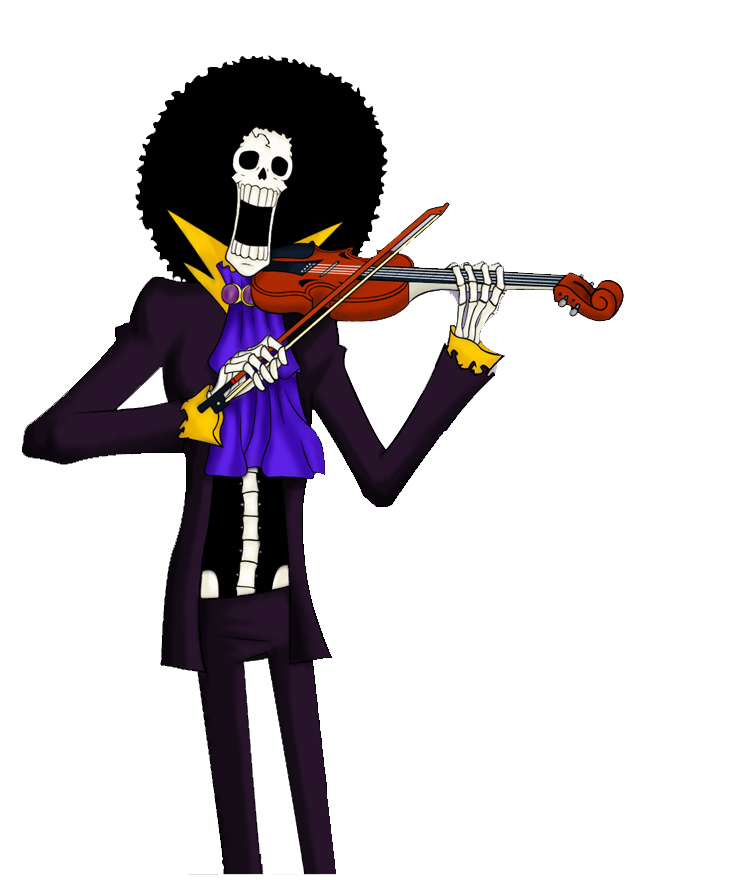
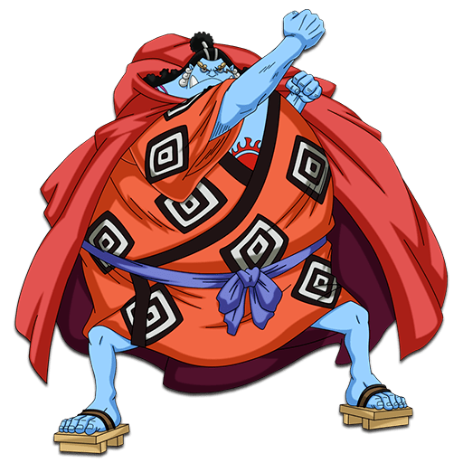

Principais Personagens
- D. Luffy
- Roronoa Zoro
- Sanji
- Usopp
- Nami
- Tony Tony Chopper
- Brook 
- Franky
- Jinbe 
- Nico Robin

Monkey D. Luffy: Capitão do Chapéu de Palha, é um jovem com habilidades de borracha devido a comer a Fruta do Demônio Gomu Gomu. Ele está em uma missão para se tornar o Rei dos Piratas e encontrar o lendário tesouro, o One Piece.

Roronoa Zoro: O espadachim da equipe, ele é especialista em técnicas de três espadas. Ele é um ex-pirata procurado e busca se tornar o melhor espadachim do mundo.

Sanji: O cozinheiro da equipe, ele é especializado em artes marciais e usa suas pernas para lutar. Ele é conhecido por seu amor pelas mulheres e é o principal responsável pela culinária do navio.

Usopp: O atirador da equipe, ele é conhecido por sua habilidade em criar e usar uma variedade de dispositivos e armas. Ele é um mentiroso confesso e muitas vezes se descreve como um "guerreiro do mar".

Nami: A navegadora do Chapéu de Palha, ela tem habilidades excepcionais em previsão do tempo e navegação. Ela também é uma talentosa ladra de tesouros e é motivada por encontrar o tesouro de sua vila natal.

Tony Tony Chopper: Um rena com habilidades humanas devido a comer a Fruta do Demônio Hito Hito, ele é o médico da equipe e é capaz de se transformar em várias formas.
Brook: Um esqueleto vivo e músico, ele se juntou à equipe após ser revivido com a Fruta do Demônio Yomi Yomi. Ele é conhecido por sua habilidade em tocar o violino e trazer alegria e humor para a equipe.

Franky: Um ciborgue e engenheiro naval, ele é o responsável pela manutenção e atualização do navio do Chapéu de Palha, o Thousand Sunny. Ele tem um forte senso de justiça e se preocupa profundamente com seus amigos.
Jinbe: é um peixe-homem, uma raça de criaturas meio humanas e meio peixes que são capazes de viver tanto na água quanto em terra firme. Sua história começa na Ilha dos Tritões, onde ele nasceu e foi criado. Ele se tornou um guerreiro habilidoso e eventualmente se tornou um dos Sete Guerreiros do Mar, uma posição de prestígio no mundo dos piratas que o coloca sob o comando direto do governo mundial.

Nico Robin: Uma arqueóloga e historiadora, ela é especializada em pesquisar e decifrar textos antigos. Ela se juntou ao Chapéu de Palha após anos de perseguição como uma procurada.